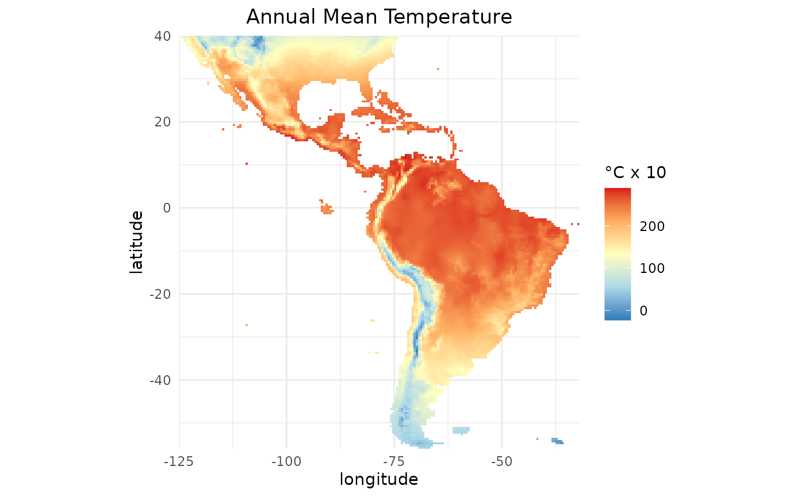
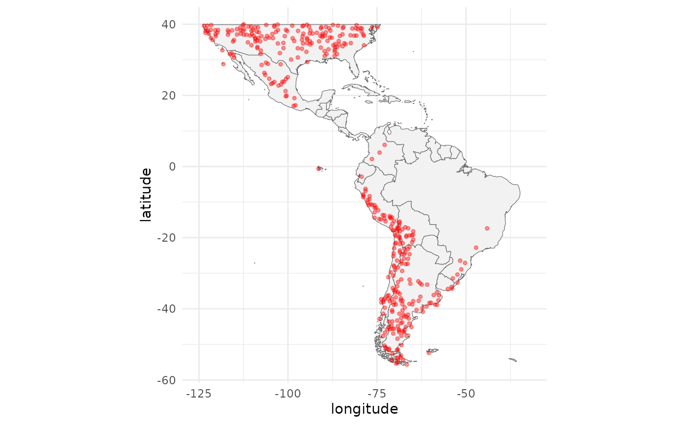
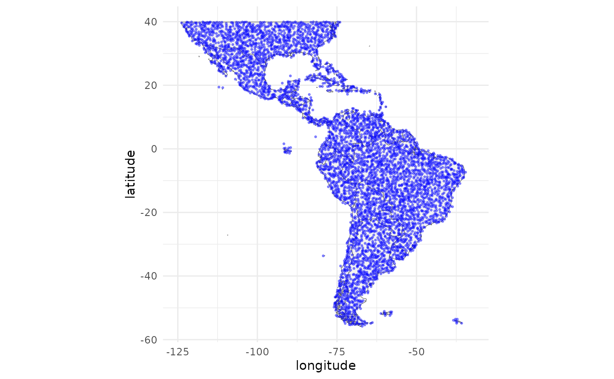

Intro
In this article you will learn how to prepare the data to train
models using SDMtune. We will use the virtualSp dataset included in
the package and environmental predictors from the WorldClim dataset.
Acquire environmental variables
For the analysis we use the climate data of WorldClim version 1.4 (Hijmans et al. 2005) and the terrestrial
ecoregions from WWF (Olson et al.
2001) included in the dismo package:
files <- list.files(path = file.path(system.file(package = "dismo"), "ex"),
pattern = "grd",
full.names = TRUE)We convert the files in a raster object that will be used later in the analysis:
predictors <- terra::rast(files)There are nine environmental variables, eight continuous and one categorical:
names(predictors)
#> [1] "bio1" "bio12" "bio16" "bio17" "bio5" "bio6" "bio7" "bio8" "biome"- Continuous variables
- bio1 Annual Mean Temperature
- bio5 Max Temperature of Warmest Month
- bio6 Min Temperature of Coldest Month
- bio7 Temperature Annual Range (bio5-bio6)
- bio8 Mean Temperature of Wettest Quarter
- bio12 Annual Precipitation
- bio16 Precipitation of Wettest Quarter
- bio17 Precipitation of Driest Quarter
- Categorical variables
- biome Terrestrial Ecoregions of the World
We can plot bio1 using the gplot
function from the rasterVis package:
gplot(predictors$bio1) +
geom_tile(mapping = aes(fill = value)) +
coord_equal() +
scale_fill_gradientn(colours = c("#2c7bb6", "#abd9e9", "#ffffbf", "#fdae61", "#d7191c"),
na.value = "transparent",
name = "°C x 10") +
labs(title = "Annual Mean Temperature",
x = "longitude",
y = "latitude") +
scale_x_continuous(expand = c(0, 0)) +
scale_y_continuous(expand = c(0, 0)) +
theme_minimal() +
theme(plot.title = element_text(hjust = 0.5),
axis.ticks.x = element_blank(),
axis.ticks.y = element_blank())
Prepare presence and background locations
Let’s load the SDMtune package:
library(SDMtune)
#>
#> _____ ____ __ ___ __
#> / ___/ / __ \ / |/ // /_ __ __ ____ ___
#> \__ \ / / / // /|_/ // __// / / // __ \ / _ \
#> ___/ // /_/ // / / // /_ / /_/ // / / // __/
#> /____//_____//_/ /_/ \__/ \__,_//_/ /_/ \___/ version 1.3.3
#>
#> To cite this package in publications type: citation("SDMtune").For demonstrating how to use SDMtune we use the random
generated virtual species virtualSp dataset included in
the package. The dataset contains 400 coordinates for presence and 5000
for background locations.
help(virtualSp)
p_coords <- virtualSp$presence
bg_coords <- virtualSp$backgroundPlot the study area together with the presence locations:
ggplot(data = map_data("world"), mapping = aes(x = long, y = lat)) +
geom_polygon(aes(group = group), fill = "grey95", color = "gray40", size = 0.2) +
geom_jitter(data = p_coords, aes(x = x, y = y), color = "red",
alpha = 0.4, size = 1) +
labs(x = "longitude", y = "latitude") +
theme_minimal() +
theme(legend.position = "none") +
coord_fixed() +
scale_x_continuous(limits = c(-125, -32)) +
scale_y_continuous(limits = c(-56, 40))
#> Warning: Using `size` aesthetic for lines was deprecated in ggplot2 3.4.0.
#> ℹ Please use `linewidth` instead.
#> This warning is displayed once every 8 hours.
#> Call `lifecycle::last_lifecycle_warnings()` to see where this warning was
#> generated.
To plot the background locations run the following code:
ggplot(data = map_data("world"), mapping = aes(x = long, y = lat)) +
geom_polygon(aes(group = group), fill = "grey95", color = "gray40", size = 0.2) +
geom_jitter(data = as.data.frame(bg_coords), aes(x = x, y = y),
color = "blue", alpha = 0.4, size = 0.5) +
labs(x = "longitude", y = "latitude") +
theme_minimal() +
theme(legend.position = "none") +
coord_fixed() +
scale_x_continuous(limits = c(-125, -32)) +
scale_y_continuous(limits = c(-56, 40))
Create an SWD object
Before training a model we have to prepare the data in the correct
format. The prepareSWD() function creates an
SWD() object that stores the species name, the coordinates
of the species at presence and absence/background locations and the
value of the environmental variables at the locations. The argument
categorical indicates which environmental variables are
categorical. In our example biome is categorical (we
can pass a vector if we have more than one categorical environmental
variable). The function extracts the value of the environmental
variables for each location and excludes those locations that have
NA value for at least one environmental variable.
data <- prepareSWD(species = "Virtual species",
p = p_coords,
a = bg_coords,
env = predictors,
categorical = "biome")Explore the SWD object
Let’s have a look at the created SWD() object:
data
#>
#> ── Object of class: <SWD> ──
#>
#> ── Info
#> • Species: Virtual species
#> • Presence locations: 400
#> • Absence locations: 5000
#>
#> ── Variables
#> • Continuous: "bio1", "bio12", "bio16", "bio17", "bio5", "bio6", "bio7", and
#> "bio8"
#> • Categorical: "biome"When we print an SWD() object we get a bunch of
information:
- the name of the class;
- the name of the species;
- the number of presence locations;
- the number of absence/background locations;
- the environmental variables available in the dataset:
- the name of the continuous environmental variables, if any;
- the name of the categorical environmental variables, if any.
The object contains four slots: @species,
@coords @data and @pa.
@pa contains a vector with 1 for presence and 0 for
absence/background locations. To visualize the data we run:
head(data@data)| bio1 | bio12 | bio16 | bio17 | bio5 | bio6 | bio7 | bio8 | biome |
|---|---|---|---|---|---|---|---|---|
| 32 | 59 | 55 | 0 | 152 | -118 | 270 | 66 | 10 |
| 161 | 1427 | 426 | 275 | 323 | -10 | 333 | 78 | 4 |
| 156 | 977 | 341 | 137 | 342 | -41 | 384 | 203 | 8 |
| 119 | 975 | 305 | 177 | 313 | -77 | 390 | 190 | 8 |
| 112 | 633 | 268 | 42 | 333 | -106 | 440 | 218 | 8 |
| 92 | 196 | 64 | 37 | 254 | -37 | 291 | 26 | 8 |
We can visualize the coordinates with:
head(data@coords)| X | Y |
|---|---|
| -67.75 | -21.75 |
| -86.75 | 33.75 |
| -96.25 | 35.75 |
| -89.25 | 39.25 |
| -98.75 | 39.75 |
| -68.75 | -41.25 |
or the name of the species with:
data@species
#> [1] "Virtual species"Save an SWD object
We can save the SWD() object in a .csv
file using the function swd2csv() (the function saves the
file in the working directory). There are two possibilities:
- save the object in a single file with the column pa indicating if the location is a presence (1) or an absence/background (0) site
swd2csv(data, file_name = "data.csv")- save the object in two separate files: one for the presence and the other for the absence/background locations
Conclusion
In this article you have learned:
- how to create a raster object;
- how to plot a raster object using the
gplotfunction included in therasterVispackage; - how to plot locations using the
ggplotand themapspackages; - how to create an
SWD()objects; - how to extract information from an
SWD()object; - how to save an
SWD()object in a .csv file.
Move on to the second article and
learn how to train models using SDMtune.